Fullstack Product Engineer · Case Study
AI Interview Platform · revamp report and execution narrative
| Author | M. Fauzan Ahnaf Athallah |
| Date | 16 October 2026 |
| Repository | github.com/rakamindev/ai-interview-platform |
| Branch | feat/platform-revamp, 31 commits, 74 files changed (+8,447 / −180) |
| Pull request | github.com/rakamindev/ai-interview-platform/pull/182 |
| Video walkthrough | [video link, added before portal submission] |
| Claimed depth | Frontend-heavy, with real backend depth, argued with evidence in §9 |
The platform runs AI voice interviews and produces per-skill portfolios and fit/gap reports that hiring teams use to decide who moves forward. The scoring pipeline is backend work; the places where humans meet the results, the invitation link, the pre-flight checks, the interview screen, the assessor's fit/gap table, are where trust is created or destroyed. That is where this revamp works. The scope is frozen around the candidate path you can trust: from link to result, plus the tenant boundary that protects the data behind it.
What shipped:
expected_level and is_override for every comparison (additive, old reports keep rendering); the UI renders the Required column, marks overridden levels, formats levels consistently (L1–L5), and surfaces errors instead of blank pages.At a glance: 31 commits · 74 files changed (+8,447 / −180) · 50 API examples · 29 web tests · 111 files lint-clean · 22 findings (1 P0 · 5 P1 · 7 P2 · 9 P3 → 12 fixed, 3 partial, 7 deferred with reasons) · one seeded-fault branch left visible on purpose (§7).
How to read this report: §2 product context and UU PDP; §3 findings; §4 strategy and trade-offs; §5 acceptance criteria and edge cases; §6 the step-by-step execution narrative; §7 verification and evidence; §8 screenshots; §9 claimed depth; §10 limitations and follow-ups; §11 links. The video walkthrough link (§11) is added before portal submission.
An assessor creates an assessment (skills drawn from a taxonomy, language, duration), invites candidates with a link, and the candidate completes a voice interview with an AI interviewer (audio streamed to Gemini Live). The backend then produces a portfolio, per-skill coverage with transcript evidence, and a fit/gap report against a vacancy. Recruiters read those results to decide who moves forward.
Recruiters choose the product, work fast, and read results. Candidates never chose the product: they receive a link, often on a phone, sometimes with one shot at the process. A mislabeled failure or a false “recorded” claim costs the recruiter minutes, it can cost the candidate the opportunity. That asymmetry is why this revamp prioritizes the candidate's path and the correctness of the result contract over new features.
Indonesia's hiring market is high-volume and cost-sensitive. Unemployment is low (4.85%, Aug 2025) yet volume hiring never stops, led by outsourcing/staffing, BPO, and government selection. AI interviewing is no longer novel: local vendors already market Indonesian-language interviews as table stakes, and CV/ATS ranking is commoditized. What remains hard, and what this product's portfolio/fit-gap design is built around, is consistent per-skill rubrics, evidence traceable to the transcript, and an audit trail. Candidate trust is the scarce resource: only about a quarter of candidates believe AI will judge them fairly, roughly two-thirds want disclosure when AI is used in hiring, and most would rather have a human in the loop. Every fabricated success screen or misleading failure erodes exactly the trust this product runs on. WhatsApp is the default candidate channel, and the price anchor is tens of thousands of rupiah per candidate, so drop-off and cost per interview both matter.
The platform processes personal data by definition: names, audio, transcripts, scores. Since 17 October 2024 the PDP Law (UU 27/2022) is fully in force, and its implementing regulation (PP 33/2026) takes effect 16 January 2027, adding mandatory DPIAs for AI-driven scoring, a right to object to automated decisions, written retention policies, and stricter cross-border transfer rules. Two facts shaped this work directly:
Within this revamp's scope, the PDP angle is respected through minimization: no PII in logs or commits, synthetic demo data, reversible migrations, and no new silent data retention.
Method: a full read of both codebases, then the workflow walked end-to-end with synthetic data, database records → API payloads → UI rendering, with every finding pinned to file:line and a reproduction. 22 findings survived; three suspected issues were investigated and dismissed (for example, a Redis 5.x method that is actually aliased, not missing). Severity rubric: P0 the core flow cannot run at all · P1 wrong decisions or data leakage on common paths · P2 serious degradation, silent failure, or misleading information · P3 hygiene, drift, latent risk.
| ID | Sev | Category | Finding | Status |
|---|---|---|---|---|
| F-01 | P0 | defect | Production pre-flight measured third-party CDNs that the production CSP blocks, and a hard gate then stopped every candidate from starting an interview. | Fixed |
| F-02 | P1 | defect | Thresholds (8/4 Mbps) far above voice needs blocked working connections, while a total upload failure returned a fabricated 4.0 Mbps that passed the gate. | Fixed |
| F-03 | P1 | defect | Portfolio export / fit-gap / regeneration / override routes trusted the URL id, cross-tenant read and write on sequential ids (IDOR). | Fixed |
| F-04 | P1 | defect | The fit/gap “Required” column read a field that was never emitted; the assessor-override marker was never emitted either. | Fixed |
| F-05 | P1 | defect | Any fetch failure on the candidate page (invalid token, outage) rendered “Interview Complete, has been recorded”. | Fixed |
| F-20 | P1 | defect | Exhausted WebSocket reconnects also ended on a fabricated completion while the session stayed active with no recording. | Fixed |
| F-06 | P2 | defect | Silent-failure cluster: blank pages with no error state or retry, and as any casts hiding contract drift. | Partial |
| F-07 | P2 | defect | “Create Link” could fail with no feedback at all (try/finally without catch), the dialog just closed. | Fixed |
| F-08 | P2 | missing spec | Taxonomy skill ids were dropped on selection and portfolio ids were authored by the LLM, cross-layer matching silently degraded to text labels. | Fixed |
| F-09 | P2 | defect | The sample APP_BASE_URL pointed at the API, every fresh setup produced invitation links that 404. | Fixed |
| F-10 | P2 | defect | Interview language cannot be changed after an assessment is created (create page sends it; edit page does not). | Deferred |
| F-11 | P2 | missing spec | No erasure path exists; a foreign key blocks portfolio deletion, the PDP erasure right is technically unfulfillable today. | Deferred |
| F-21 | P2 | defect | Default Gemini model names were retired upstream, fit/gap narratives silently fell back to templates under a 200 OK. | Deferred |
| F-12 | P3 | defect | Copy: pluralization “1 skills”; an internal codename (“B7”) leaked into the UI. | Partial |
| F-13 | P3 | defect | Dead code and dead enum values: unmounted middleware, unused helpers, an unrouted page, a status that is never written. | Deferred |
| F-14 | P3 | defect | Duplicate index on coverage_maps.session_id (already covered by a composite unique index). | Deferred |
| F-15 | P3 | defect | Setup docs drift: wrong API port (3000 vs 3001), a wrong env var name, a wrong folder name, onboarding bugs that are not bugs. | Partial |
| F-16 | P3 | defect | Speaker contract drift (ai relabeled to assessor in one layer) hidden by a tolerant UI, a trap for future consumers. | Deferred |
| F-17 | P3 | defect | TypeScript types disagreed with real payloads (skill_id number vs string, ai_level string vs integer); level text rendered raw “3” in one place, “L3” in another. | Fixed |
| F-18 | P3 | defect | web/package-lock.json existed but was never committed, dependency drift across machines and CI. | Fixed |
| F-19 | P3 | defect | Tenant resolution fallback: hardcoded 'test-corp' plus LIMIT 1 without ORDER BY, the root of the “wrong tenant” class. | Deferred |
| F-22 | P3 | defect | Assessor pages overflowed horizontally at mobile widths (measured scrollWidth up to 527 at a 390 px viewport). | Fixed |
The gap in one sentence: the platform computes results well enough, but the seams where humans meet those results were unowned, failures mislabeled, successes fabricated, a presentation contract that drifted, and an identity key that dissolved into free text.
| A: “Candidate can start” | B: “Results can be trusted” | C: Combined (chosen) | |
|---|---|---|---|
| Content | Wire the speed test to the API, calibrate thresholds, fix candidate error states. | Tenant scoping, fit/gap contract, skill identity. | A + B, plus adjacent small findings on the same path (F-07, F-09). |
| User impact | Unblocks the flow that was impossible in production. | Stops wrong results and personal-data leakage. | The complete story: link → interview → result. |
| Cost | Small–medium; web-heavy, one backend endpoint. | Medium; backend-heavy, one small migration, more specs. | Medium–large; the right depth for the rubric. |
| Maintainability | High, the third-party dependency disappears. | High, scoping and contract patterns become examples. | High, every fix leaves tests behind. |
| Failure modes | API down → pre-flight fails explicitly, not silently. | Wrong scope → 404 (fail closed); rogue model output → rejected. | Both fail-closed and tested. |
| Codebase fit | Uses the existing but unwired speed_test endpoint. | Completes the thin-controller + service + concern pattern. | Touches api/ and web/ proportionally. |
Why C: the rubric rewards a real change in experience plus engineering quality. A alone touches the backend too thinly; B alone misses the P0; C also yields the natural failure paths the brief asks for, pre-flight failure, invalid link, API error, rogue model output, cross-tenant access.
One comprehensive PR chosen over an umbrella PR with sub-PRs. With no reviewer team to benefit from stacked branches, sub-PRs would only add coordination and rebase cost, and risk reading as unfinished work. The “giant PR” risk is managed instead by commit discipline: atomic commits ordered harness → backend → frontend → failure paths, with theme-clean diffs and every commit green. Seeded-fault evidence lives on a separate scratch branch, deliberately without a PR.
| Decision | Chosen | Rejected alternative, and why |
|---|---|---|
| Speed-test target | Measure the API origin the interview actually uses. | Third-party CDNs, blocked by the production CSP, and measuring a CDN says nothing about the interview path. |
| Thresholds | 2 Mbps / 1 Mbps / ≤ 300 ms as one documented constant. | Keep 8/4 Mbps, 20–80× above what voice needs; it blocked working connections. |
| Failure semantics | Fail closed: unreachable ≠ slow, no fabricated values. | Keep fallback defaults, a probe that never ran must never pass a gate. |
| Override flag | Additive is_override on every comparison. | Schema change / required flag, old reports must keep rendering (verified by spec). |
| Skill ids | Resolve-or-null against the taxonomy (case-insensitive id → label → null). | Trust the model's ids, unverifiable; drop ids entirely, matching degrades to labels. |
| Notice screens | One shared notice component for all six interview states. | Six duplicated blocks (flagged in independent review; refactored before push). |
| Model output handling | Validate the whole payload before writing anything. | Write-then-fail, a half-written portfolio is worse than a failed generation. |
| Findings | Reason |
|---|---|
| F-06 full scope | The touched pages (portfolio, fit/gap) were fixed with their workstreams; the rest (edit, invite, monitor) spread too wide without adding depth, follow-up. |
| F-10 | A real gap, but standalone; it does not strengthen the candidate-path story, next iteration. |
| F-11 | Touches data-architecture decisions (soft vs hard delete, employer orchestration), escalated as a constraint signal + roadmap, not patched without a spec. |
| F-13, F-14, F-16, F-19 | Hygiene and latent risk: cheap but behavior-neutral for the chosen path, listed as follow-ups in §10. |
| F-21 | Config/infra outside the repo scope (deployment config + defaults); documented with a verified local workaround, §7, moment 1. |
35 acceptance criteria were derived before coding, each mapped 1:1 to a test or a recorded walk, including the brief's edge cases (skills never assessed, empty ratings, model failures, odd data types, long text). The table summarizes the areas; the full list, with per-criterion evidence, is part of the working notes and was re-verified before submission.
| Area | Count | Representative criteria |
|---|---|---|
| Global (no regression) | 3 | Existing assessor flow still works; build, specs and lint green; no new as any in touched files. |
| Pre-flight & speed test | 8 | Origin-only probes; byte-sized download endpoint; one threshold constant; unreachable ≠ slow; no fabricated pass; retry; sample link opens the candidate page. |
| Interview & invite | 6 | Invalid link ≠ finished; network error + retry; honest “ended” copies; invite dialog keeps the error visible; connection lost → reconnect, never a fake completion. |
| Tenant scoping | 3 | All five portfolio/fit-gap/override routes → 404 for another tenant; same-tenant behavior unchanged; the original IDOR reproduction now 404. |
| Fit/gap contract | 6 | expected_level + is_override on every entry; Required column renders; override marker shown; not-assessed preserved; L1–L5 everywhere; old reports render. |
| Skill identity | 8 | Picker stores taxonomy ids; coverage map carries them; generator resolves id → label → null; prompt echoes coverage ids; case-insensitive matching; reversible backfill; malformed output fails cleanly; evidence capped at three quotes. |
| Repo hygiene | 1 | package-lock.json tracked and consistent with package.json. |
| Edge case | Verified behavior |
|---|---|
| Skill never assessed | not_assessed with null delta; UI shows “— Not assessed” with a neutral badge. |
| Empty rating / level | Database enforces NOT NULL and clamps 1–5; a null candidate level renders “—”; overrides are validated at the boundary. |
| Model call fails / times out / partial | Fit/gap: fallback narrative + server log (spec-covered). Portfolio: status failed + error surfaced in the UI with retry; timeouts fail cleanly with no half-written skills (spec-covered); malformed payloads fail before any write. |
| Duplicate / stale jobs | Re-generation replaces skills instead of duplicating; fit/gap re-generation reuses the report row; a job for a deleted session is skipped without crashing. |
| Odd data types | Contract aligned end-to-end (string ids, numeric levels); invented ids are resolved or dropped, never stored. |
| Long text | Evidence capped at three quotes; wrapping verified on desktop and mobile with real-length content. |
| Invalid / expired token | Explicit invalid-link screen with guidance, not a completion screen. |
| Session already ended | Honest copies differentiated by end reason and whether the interview actually started. |
| Connection lost mid-interview | Connection-lost screen + Reconnect (mic muted); reload resumes; never “has been recorded”. |
Step 1: Discovery and baseline. Cloned and ran both services, walked the real workflow with synthetic data, and recorded the baseline honestly: no test suite, no test runner, no CI, exactly the starting point the brief describes. First-run friction (setup docs pointing at the wrong port and folder) went straight into the findings list.
Step 2: Context. Traced the product from database schema → API payloads → UI rendering. Researched the PDP obligations that actually apply (UU 27/2022, PP 33/2026, the Gemini data terms) and the industry landscape (market structure, candidate sentiment, pricing anchors) so the scope would reflect the product's real constraints, not just code smells.
Step 3: Findings. 22 findings with a consistent severity rubric, every one pinned to file:line with a reproduction. Three suspected issues were investigated and dismissed with reasons, recorded so they are not re-litigated. Six constraint signals were escalated for decisions above the code (§3).
Step 4: Strategy and acceptance criteria. Scope frozen to option C; 35 acceptance criteria written before any implementation, each mapped to its future evidence; trade-off matrix and commit plan fixed up front.
Step 5: Implementation. The harness came first (otherwise nothing after it is provable), then the five workstreams, highest severity first, each commit green, Conventional Commits, no AI attribution anywhere.
| Stage | What happened | Commits |
|---|---|---|
| Harness | RSpec + FactoryBot, Vitest + Testing Library, RuboCop baseline, CI workflow (API + web jobs). | up to f359145 |
| Tenant scoping | Portfolio.for_tenant + fail-closed 404 across five routes; 11 request specs two-tenant. | f030d69 |
| Pre-flight | Speed-test endpoints + spec; client rewrite (origin-only, fail closed); thresholds; UI copy + retry. | e588dbf → 8ce590d |
| Interview states | candidate_info + end_reason payload; six-state page; invite dialog error; reconnect fix. | a639eb3 → b0d3919 |
| Fit/gap contract | Engine is_override + spec; web contract and types; error surfacing. | 3f9ed7c → 46ebb7d |
| Skill identity | Canonicalization + specs; reversible backfill migration; picker/card; copy cleanup. | 9908d49, 3eb08cd, 11c93dc, 0d47ca3 |
| Mobile fix (F-22) | Assessor headers wrap; verified at 390 px on all affected pages. | 811467a |
| Review fixes | Unreachable marker; shared notice component; case-insensitive id match; payload validation; lint. | 91f2954, 2f9a6fd, a127f8c, 4934c21, 89cef7d |
| Seeded fault (scratch branch) | Break → five specs fail → revert → green. Left visible on purpose. | f41c7f4 → 862535d |
| Failure-path specs | Model timeout → portfolio fails cleanly; narrative failure → rule-based fallback; duplicate jobs → idempotent regeneration and report reuse; stale job for a deleted session → skipped. | d6abc0c → f304d07 |
Step 6: Failure-path verification. Seeded fault on a scratch branch; runtime fault injection (the API was cut during a live interview to prove the reconnect behavior); migration rollback/redo; a PII audit over all commits and artifacts; CSP verification; a desktop + mobile UI audit that produced finding F-22, fixed immediately; and a mechanical self-review (no new debug output, casts, or disabled rules).
Step 7: Independent review and fixes. Before pushing, the full diff was reviewed on two axes, standards (repo conventions, baseline smells) and spec (does the code match the findings, strategy and acceptance criteria). Three real gaps were fixed with new tests; one reviewer finding was rejected as a false positive with written reasoning. Details in §7.
Step 7b, Failure-path specs. The brief's "designed failure paths" baseline was audited against the suite: partial writes and malformed output were already covered, but model timeouts, narrative-call failures, duplicate jobs, and stale jobs were not. Four specs were added to pin each behavior to a test.
Step 8: Submission. This report, the curated screenshots in assessment/screenshots/, and a 3–5 minute video walkthrough of the problem → demo → enhancement arc.
f304d07)| Gate | Result |
|---|---|
| API specs (RSpec + FactoryBot) | 50 examples, 0 failures. |
| API lint (RuboCop) | 111 files inspected, 0 offenses. |
| Web tests (Vitest + Testing Library) | 29 tests across 8 files, all green. |
| Web build (TypeScript + Vite) | Green. |
| CI workflow | Added (API job: Postgres service, schema load, RuboCop, RSpec; web job: install, build, tests). First run happens on the pull request. |
On the scratch branch scratch/seeded-fault-idor, the tenant scope is deliberately broken (the scoped query replaced by an unscoped one), the suite is watched failing, and the change is then reverted, with both commits left visible in the history, as the brief asks. The point is not that tests exist, but that they were watched failing for the exact regression they claim to guard.
# scratch/seeded-fault-idor 862535d Revert "temp: seed fault to prove the cross-tenant specs fail" f41c7f4 temp: seed fault to prove the cross-tenant specs fail 811467a fix(web): let headers wrap on narrow screens # At f41c7f4, Portfolio.for_tenant replaced by an unscoped query: 42 examples, 5 failures GET /portfolios/:id/export expected 404, got 200 GET /portfolios/:id/fitgap/:vacancy_id expected 404, got 200 POST /portfolios/:id/fitgap expected 404, got 202 POST /portfolios/:id/regenerate_fitgap expected 404, got 202 POST /portfolio_skills/:id/override expected 404, got 201 # At 862535d, after git revert: 42 examples, 0 failures
(Counts shown as recorded at that commit; the suite grew to 50 examples with the review-fix and failure-path specs afterwards.)
During a live interview, the API was cut to simulate an outage. Before the fix, the candidate saw “Interview Complete, has been recorded” within seconds while the session stayed active with no recording. After the fix, the page shows the connection-lost screen with a Reconnect button and the microphone muted; reloading resumes the interview correctly. A real-world reproduction of the same failure class also occurred on the local dev machine (a native-extension crash kills the audio socket, §10), which is how the runtime fault was first confirmed.
Moment 1: a report that looked right while the model never ran. Walking the fit/gap flow returned a fully populated report with HTTP 200, but the narrative was a template fallback. The worker log held the truth: API error 404: "This model models/gemini-2.0-flash-001 is no longer available...". Verification went three layers deep: the verbatim provider error, a live model listing for the same key (no 2.0-generation and no live models at all), and per-model generateContent probes. Outcome: a verified local override to a current model; the retired defaults are flagged as a constraint signal with a documented workaround (F-21). Lesson recorded: “the report renders” is not evidence that the model ran.
Moment 2: the model was authoring identity. Portfolio rows stored skill ids like sk-eng-001, invented by the LLM, never validated, while the taxonomy uses SK-ENG-001; cross-layer matching had silently degraded to text labels. Verification: trace a stored id back to the taxonomy, then to the prompt that produced it. Outcome: canonicalization (case-insensitive id → label → null), a prompt that instructs echoing coverage-map ids, and a reversible backfill for existing rows. Lesson: a generative step must never define identifiers; resolve to a source of truth or store null.
Moment 3: review output is input, not verdict. An independent two-axis review of the full diff found three real gaps, the unreachable-vs-slow signal was missing (AC-1.4), the fit/gap engine matched ids case-sensitively (AC-5.5), and malformed model output could half-write a portfolio (AC-5.7), all fixed with new tests. It also flagged one duplicate-state concern that turned out to be a false positive: the flag in question distinguishes “session ended when the link was opened” from “ended during this visit”, which the candidate payload cannot express. Rejected with written reasoning instead of applied blindly. Lesson: dispositions matter as much as findings.
== BackfillAssessmentSkillIds: reverting (down) == == BackfillAssessmentSkillIds: reverted == == BackfillAssessmentSkillIds: migrating (up) == == BackfillAssessmentSkillIds: migrated == assessment_skills (non-custom): #1 SK-ENG-001 · #3 SK-ENG-009 custom skills (must stay NULL): 1 row, skill_ids=[nil]
The migration was exercised with migrate → rollback → migrate and a full redo; custom skills stay NULL in every phase; the down path documents its own predicate limits honestly. On the test database the schema is loaded fresh in CI, so the local sync step needed after new migrations is documented for contributors.
.env, application.yml, logs, tmp) are untracked, verified with git check-ignore.This audit verifies that no PII leaked in the artifacts this work created, it is not a compliance claim; the compliance gaps are listed as constraint signals (§3) and in §10.
Production CSP allows connect-src 'self' plus the API origin. The speed test now uses the same origin as every other REST call, so it is covered by design; the third-party endpoints that violated the policy were removed rather than added to the allow-list. Verified against the deployment config before pushing.
All screenshots come from a local run with synthetic demo data. They are embedded here and stored in assessment/screenshots/.
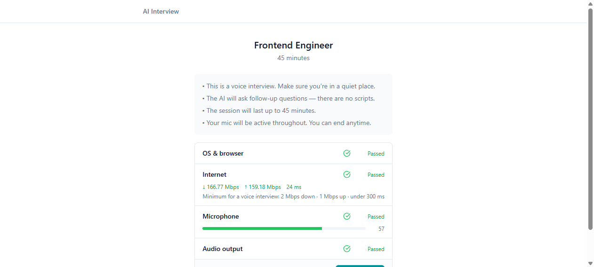
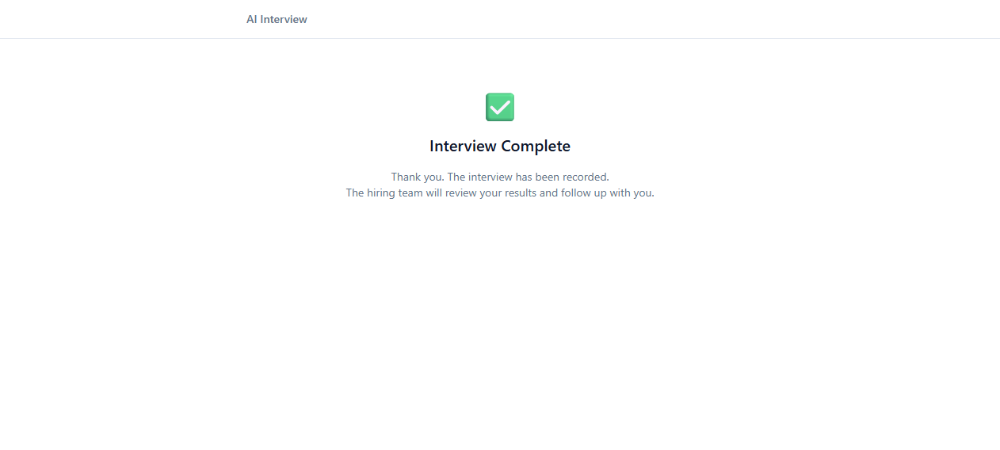
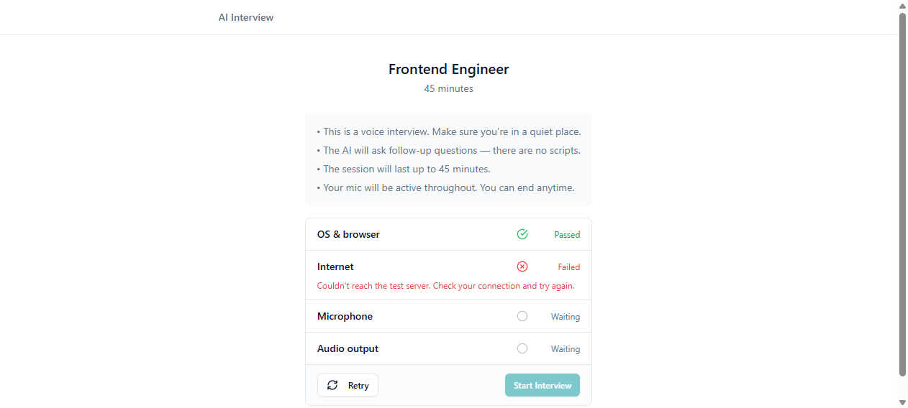
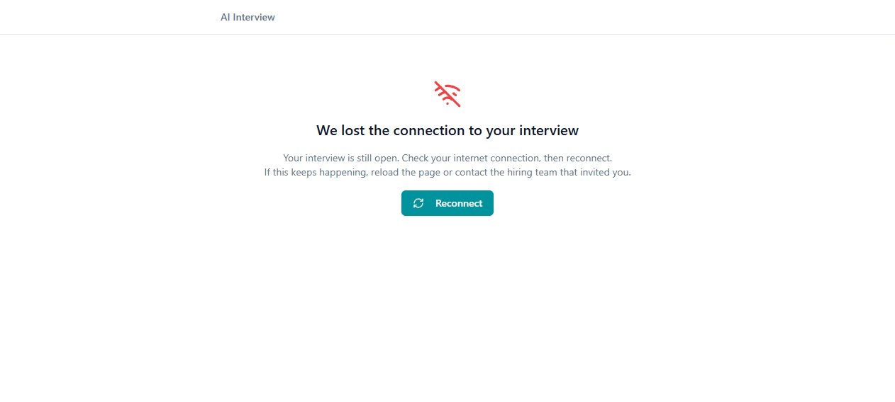
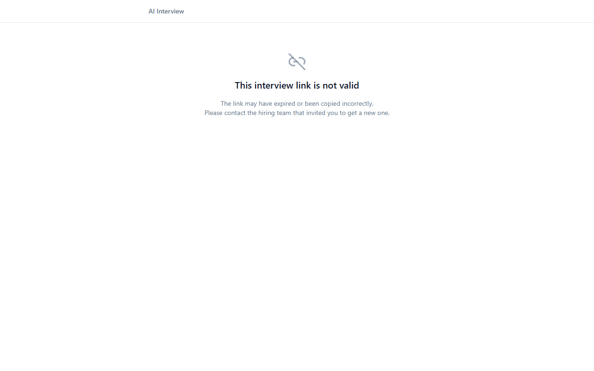
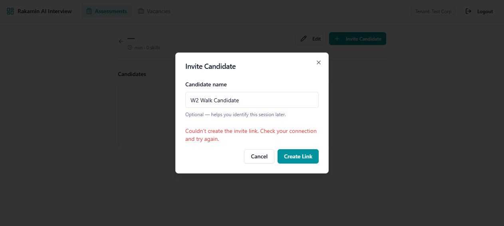
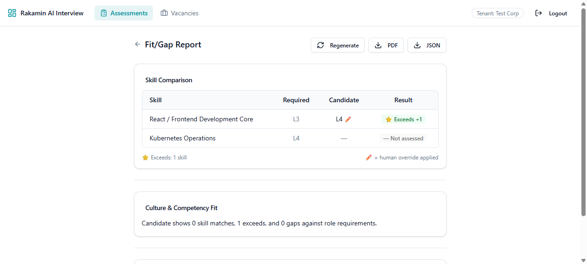
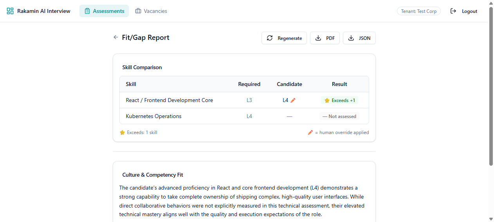
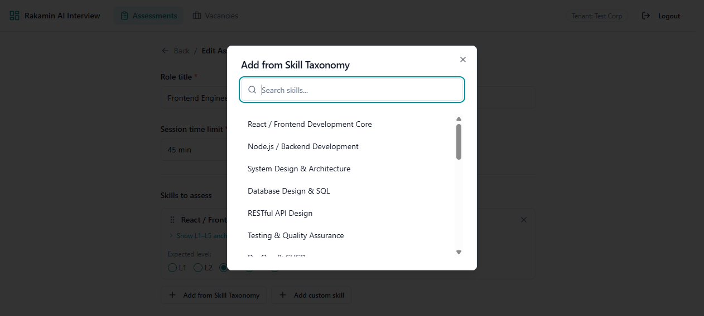
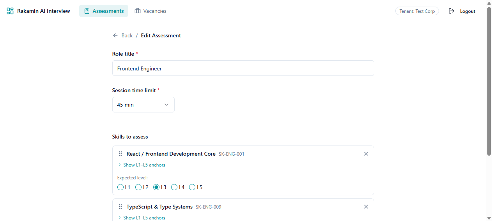
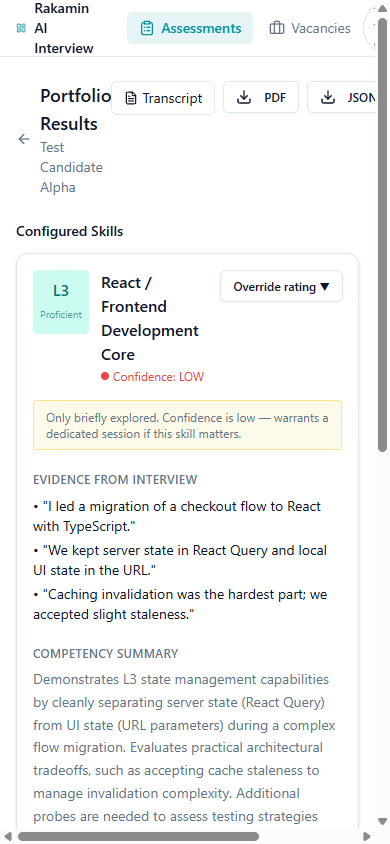
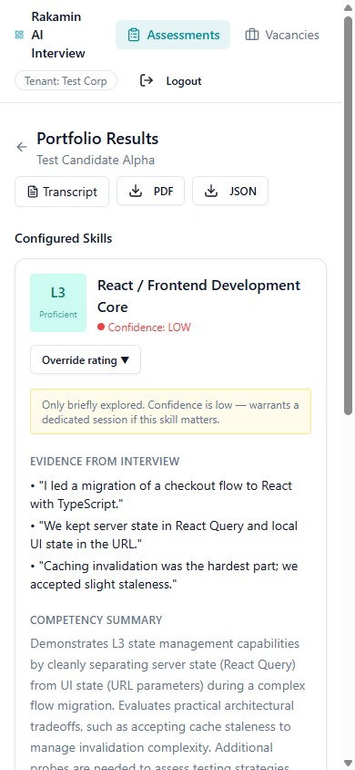
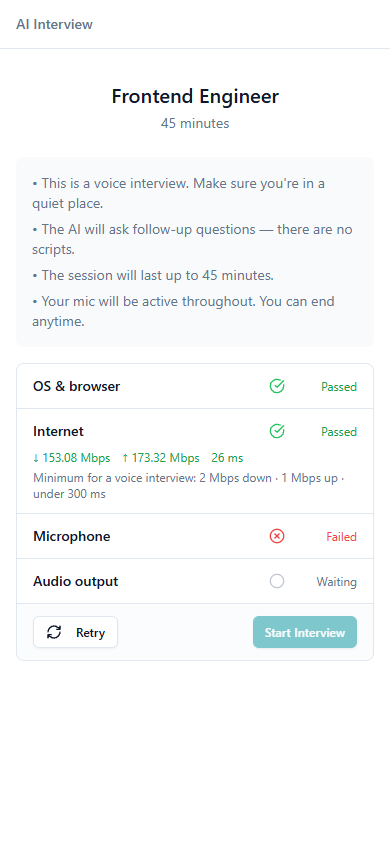
Claim: frontend-heavy, with real backend depth. The working surface was dominated by the candidate experience and the presentation contract, but every frontend guarantee is backed by a backend decision that is tested, not decorative. I can defend each of the following live, with the specific code paths and tests.
as any casts removed).expected_level, is_override on every comparison) that keeps old reports rendering, verified by spec, not assumption.| Finding | Follow-up needed |
|---|---|
| F-10 | Add language editing to the assessment edit page (backend already accepts it). |
| F-11 | Decide and implement the erasure architecture (soft vs hard delete; employer orchestration), prerequisite for PDP subject requests. |
| F-13 | Remove dead code and dead enum values; decide the fate of the unrouted signup page. |
| F-14 | Drop the duplicate index. |
| F-16 | Align the speaker contract on one vocabulary end-to-end. |
| F-19 | Make tenant resolution deterministic (explicit header/selection, no hardcoded fallback). |
| F-21 | Update default model names and deployment config in the repository (config/infra change; local workaround verified). |
| F-06, F-12, F-15 (remainder) | Error states for the remaining pages; “1 skills” pluralization; the rest of the setup-doc drift (web/README.md). |
Not implemented, by scope decision: consent capture at the invitation link, the subject-request workflow (access/erasure, ≤ 72 h), ROPA, DPIA, a written retention policy, and a human-review UI for automated decisions. These are escalated as constraint signals with a roadmap (§3) rather than half-built. What this work does verify: no PII in logs, commits, or artifacts; reversible data changes; synthetic demo data.
| Artifact | Where |
|---|---|
| Pull request | github.com/rakamindev/ai-interview-platform/pull/182 |
| Video walkthrough (3–5 min) | [video link, added before portal submission] |
| Main work | feat/platform-revamp, 31 commits, from the harness through the failure-path specs. |
| Seeded-fault evidence | scratch/seeded-fault-idor, break (f41c7f4) → revert (862535d), history left visible on purpose. |
| Report source | assessment/report.html (print source for this PDF). |
| Screenshots | assessment/screenshots/, the curated set embedded in §8. |